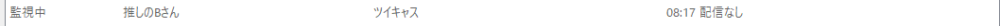
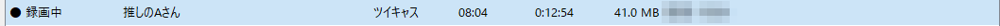
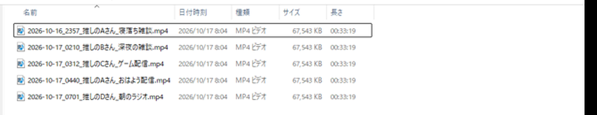
寝落ちした夜も、仕事中の昼も。ポチ録は、推しの配信が始まった瞬間に自動で録画を始め、終わったら MP4 にして残す Windows のツールです。URL を貼ったら、あとは待つだけ。
体験版は製品版とまったく同じ。10 日たったら録画が止まるだけで、録った MP4 は残ります。製品版は買い切り ¥2,980、月額なし。くわしく
配信が始まると、行が赤い「● 録画中」に変わります（名前は見本です）
2026 年 10 月 16〜17 日、開発者の PC での実機テスト（TikTok 2・ツイキャス 2・YouTube 1 を同時に録画、01:12〜07:00）。
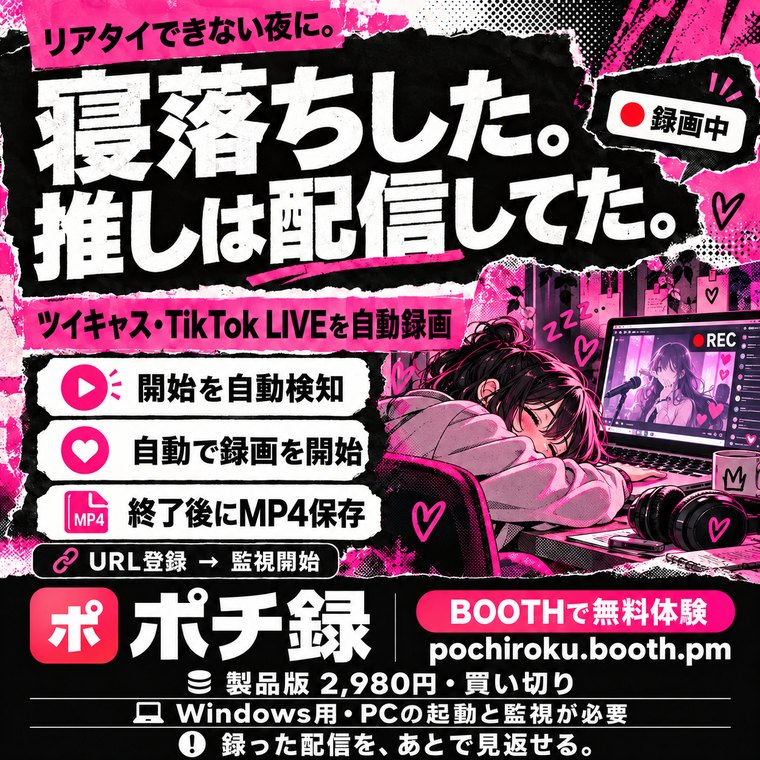
寝ている間に始まって、朝には消えている配信。
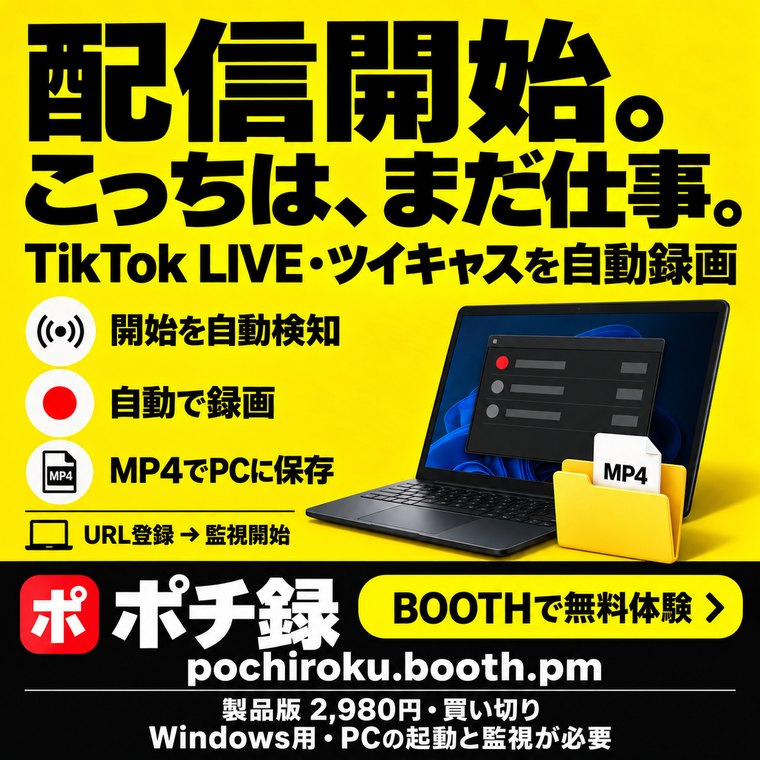
「配信開始」の通知が来ても、動けないとき。
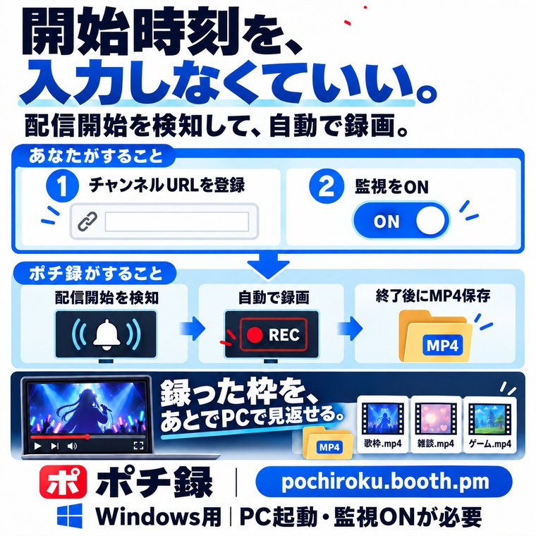
予告なしのゲリラ配信でも、URL を貼っておけば 30〜90 秒で気づきます。
| 手で録る | ポチ録 | |
|---|---|---|
| 配信の始まりに気づく | 通知を見てから。寝ていたら気づけない | 自動。始まってから最長 30〜90 秒で録画開始 |
| 録画の操作 | 毎回、録画ソフトを立ち上げて止める | なし。終わったら MP4 まで自動 |
| 何人も同時に | 1 人ずつ。手が足りない | 5 本まで同時（最大 10 本）。足りなければ順番待ち |
| ファイルの名前 | 自分で付け直す | 「日時・配信者名・タイトル」で自動 |
| PC が落ちたとき | 途中の録画は壊れる | 次の起動で、残った録画を MP4 に直す |
TikTok・ツイキャス・Twitch・YouTube のページの URL をコピーして、入力欄に貼り付けます。
それだけで見張りが始まります。30 人まで並べておけます。
終わると MP4 になり、「日時・配信者名・タイトル」の名前で保存されます。
本物の画面です（配信者の名前は見本に変えています）。番号の場所を見てください。
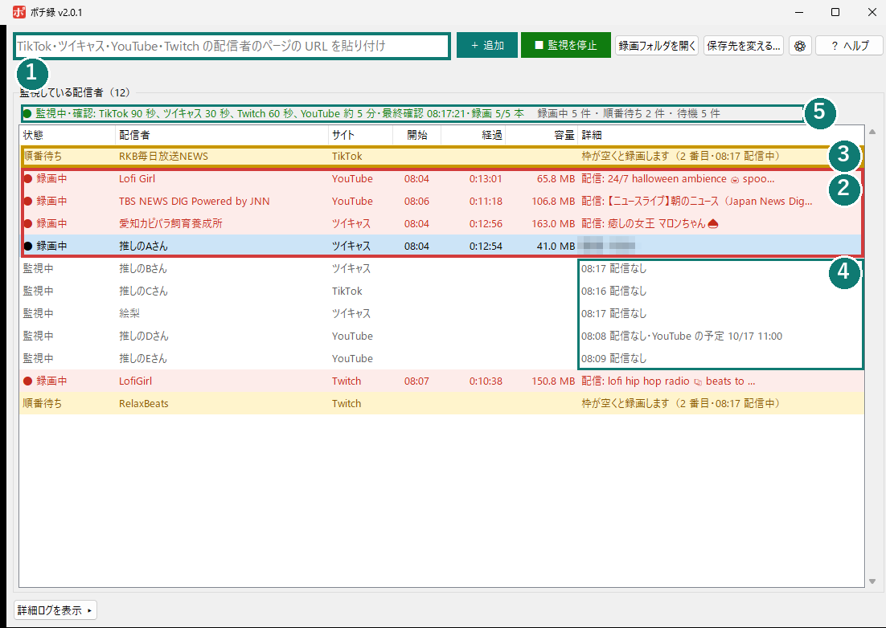



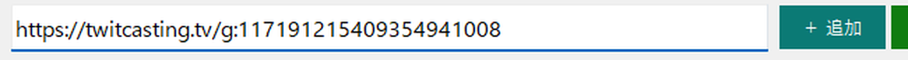
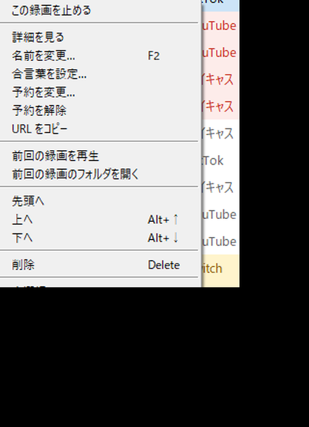
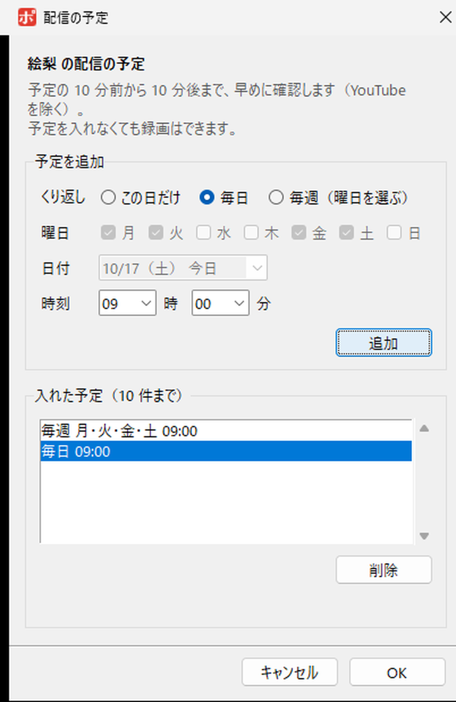
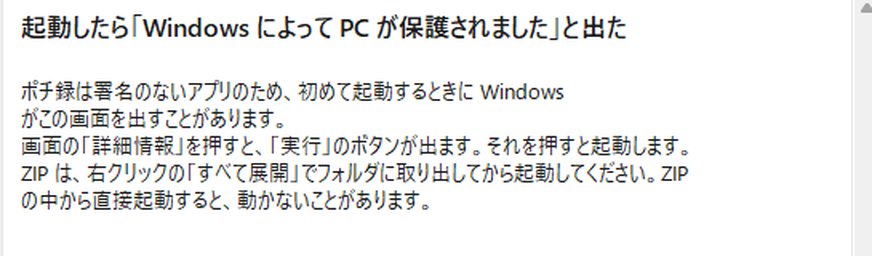
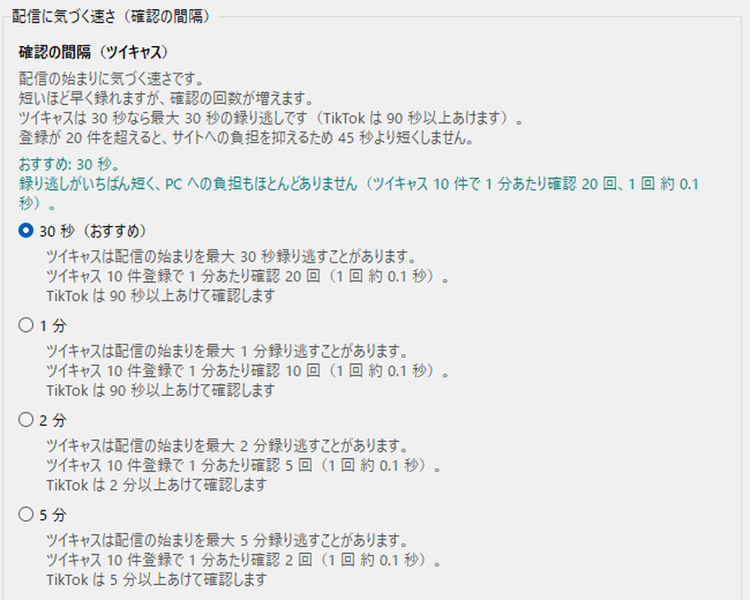
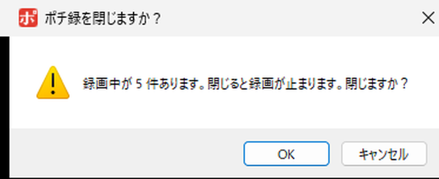
日付と時刻を選ぶだけ。「毎日 21:00」「毎週 月・水・金 22:00」の繰り返しも入れられます。予定の前後 10 分は短い間隔で確認します。
右クリック →「この録画を止める」。その配信が続く間は録り直しません。間違えたら「この配信を録り直す」。
PC が落ちた・強制終了したあとでも、次に起動したときに残った録画を MP4 に直します。
空きが 5 GB を切ると新しい録画を始めず、2 GB を切ると止めます。PC がいっぱいになって固まるのを防ぎます。
ツイキャスの合言葉の配信は、右クリックで合言葉を入れておけば録れます。
「録れないときは」「PC のスリープ」「Windows の警告」など、困ったときの答えをアプリの中に用意しています。
配信の予定が分かっているときに入れておくと、始まりにすぐ気づけます。入れなくても、ふだんの見張りで録画はできます。終わった「この日だけ」の予約は自動で消えます。
| サイト | 確認の間隔 | 状態 |
|---|---|---|
| TikTok LIVE | 90 秒ごと | 対応。あなたのアカウントは使いません |
| ツイキャス | 30 秒ごと | 対応。合言葉の配信も録れます |
| Twitch | 60 秒以上 | 対応（同時に 3 本まで）。広告のあいだ、録画が数十秒途切れることがあります |
| YouTube Live | 4 分以上 | 対応（同時に 2 本まで）。アーカイブが残るサイトなので確認はゆるめ。登録が多いと間隔が延びます |
新しい録画と見張りが止まります。録った MP4 はそのまま残り、再生もできます。製品版のキーを入れると、登録した配信者も設定もそのまま、続きから使えます。
自分で見るための私的な録画の範囲でお使いください。録画の再配布・販売・公開はできません。配信者が録画を禁じている場合はそれに従ってください。
TikTok・Twitch・YouTube ではあなたのアカウントを一切使いません。ツイキャスも、ふだんはログインしません。限定配信を録りたい人だけ、設定でログインを有効にできます。
署名のない個人製作のアプリなので出ます。「詳細情報」→「実行」で起動できます。アプリの中のヘルプにも手順があります。
有料（チケット・サブスク・メンバーシップ限定）の配信と、入会していない限定配信は録れません。YouTube のメンバーシップ限定も録れません。
スリープ中は録れません。ポチ録の設定から、ノート PC のふたを閉じても動き続けるようにできます。
配信そのものの画質で録ります。1 時間でおよそ 0.2〜1 GB です（開発者の実測）。空きは 5 GB 以上あれば録画を始めます。